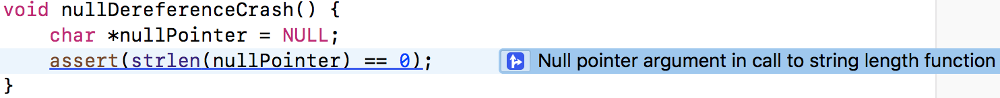
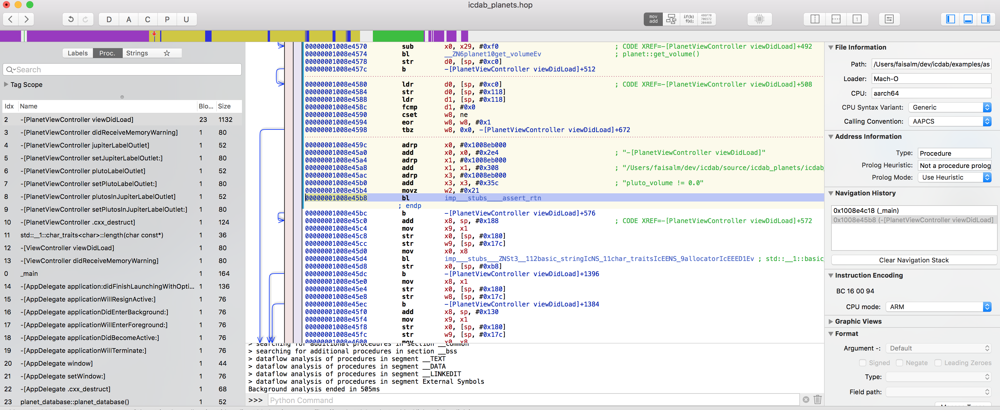

This book grew from an inspiration gained back in the late 1990s.
It’s hard to overstate the euphoria of the moment. The Internet was the next Industrial Revolution. Investors saw it as the best place to put their money. Hardware, software and services were all experiencing a Cambrian explosion of diversity and innovation.
I found myself at the center of things. I was newly recruited to Sun Microsystems. At that time, if you had a great idea for a website and wanted to start serving your customers, Sun Microsystems computers were an essential purchase. These were servers that you would either house yourself or place with a co-location provider.
Computer technology was already well developed by then, but existing solutions were now being put to use in new scenarios, and at Internet-scale. What was a perfectly good implementation of Unix, SunOS, from the rarefied halls of Stanford University was now running on E-Bay and had to be up and running without a glitch.
We had an electronic board showing the status of our critical customers. Saudi Aramco was permanently lit in red to such an extent that we wondered if that was a fault on the board itself.
My first day was somewhat ignominious. I wasn’t even given my own cubicle. My desk looked like a school table. My keyboard had several faulty and inoperative keys. I sat in one corner of a vast cube-farm and actually forgot which corner it was at on the first day. After lunch, I returned to my desk after an extensive walk around the other corners.
One thing struck me was that there was a book sitting on the desk of about a quarter of the 500 odd engineers. It proudly said on the front cover, “Panic!” (Panic! Unix System Crash Dump Analysis 1995). It was a book on SunOS crash dump analysis.
After acquiring a proper cubicle and getting to know my colleagues, I noticed that the engineers with the “Panic!” book just seemed to have that extract edge in low-level issues reported by Customers. Collectively it lifted the problem solving IQ of the Answer Center where I worked.
At Sun, there was a deep culture of learning. We were given such extensive training and support it was often the case we’d be doing seven courses per year, each a week long.
All was good until one course came up. It was called Analytical Troubleshooting (ATS). This caused great controversy within the Answer Center. It was a formal methodology for solving problems. It could not tell you the answers, but it would ensure you were forced to ask the right questions. It turned out that on our hardest problems, we were missing asking the right questions.
This was a major step forwards again in productivity. Nevertheless, some engineers, quite out of character, were loudly critical. It turned out that these techniques were just things experienced engineers had learnt as part of their craft and they didn’t want the magic to be laid bare for anyone to pick up cheaply.
One day Chris Drake was in town and popped into our office. He was the x86 architecture specialist that collaborated with Kimberley Brown to produce the “Panic!” book. They arranged a workshop to educate us on SunOS crashes on x86 architecture. It was something of a novelty at the time, prior to the remarkable rise of Linux and the GNU/Linux system.
I remember one time, as an undergraduate student during an Operating Systems lecture, I looked across the room. I noticed it was full of Sun Microsystems equipment; I stared into the Sun logo and dreamed of one day working there. It came true. So in my workshop on x86 panics, I had another idea. One day I would write a book. It would be something quite focussed on a single technical problem. It would be something that would convey the experiences I had obtained in my career. It turns out that came true as well in the book you are reading now!
This book fills a gap that has emerged between Application Developers and the platform they are developing for when a crash occurs. The mindset of the Application developer is largely understanding high-level concepts and abstractions. When a crash occurs, you can often feel rudely transported into a command line UNIX world of low level constructs, pointers and raw data.
We focus exclusively on the Apple ecosystem.
We cover macOS, tvOS, watchOS platforms, ARM Assembly, and C (CoreFoundation), Objective-C, and Objective-C++ and Swift programming languages. This is because the older languages are more prone to crash bugs. Real world applications tend to end up being a hybrid between the safer Swift language and older technologies.
We assume you have at least an introductory knowledge of iOS programming and software engineering, and have access to a Mac with Xcode.
The approach we take is to combine three different perspectives on the problem to give a rounded and robust view of the situation and how to resolve it.
Our three perspectives are:
Programming literature comprehensively has documented software engineering concepts, and Apple has documented their crash dump tooling via Guides and WWDC videos.
Formal problem solving is less discussed in software engineering circles, perhaps because it’s considered a table stakes skill for an engineer. It is however a discipline of its own and when directly studied can only enhance the “natural” abilities that seem to mark out the “technically-minded” folks from the rest of the population.
Our goal is not the shy away from repeating knowledge we’ve probably seen or read elsewhere but instead we take the viewpoint of explaining the whole narrative in a cohesive manner. What makes crash dump analysis hard is that significant background knowledge is often assumed in order to make room to concentrate on the particulars of a specific tool or crash report. That causes a barrier to entry, which this book aims to overcome.
To complement the book, there is a website of resources which is intended to be used alongside the printed material so example projects can be setup and run by yourself and experimented with. All references in this book are collected into the Bibliography Chapter at the end of the book. There you will find URLs to resources for example.
The GitHub website supporting the book at (“IOS Crash Dump Analysis Book Github Resources” 2018)
When an application crash appears after a recent code change, it can be straightforward to reason about the crash and look at the relevant code changes. Often, crashes just appear due to a change in operating environment. Those can be the most annoying. For example, the app runs fine in the Office but crashes at the customer Site. We don’t have time to get into why, but need a quick fix or workaround. Another common problem scenario arises when a new project is being explored. This is where we have no prior experience with the code base but immediately face crash problems after compilation and running the app.
In this chapter, we explore possible reasons for crashing due to a change in operating environment. Many problems can be dealt with without getting into logical analysis of the specifics of the problem at hand. In reality sometimes we just need to make progress, whilst making a note to go back and address the root cause.
Sometimes our app crashes on startup due to a missing resource issue.
We should try compiling and running other Xcode targets within the same project. Sometimes a specific target is the one that sets up the needed environment as part of the build. If so, we can make a note to address that later.
Sometimes our app crashes on startup due to a binary compatibility issue.
If we’ve recently updated Xcode, or pulled code updates on top of a compiled project, we can perform an Option-Command-Shift-K clean which cleans the build area of intermediates, and then re-build as normal.
Sometimes our app crashes only on simulator.
Here we should try Simulator Hardware->Reset all content and settings. We can try iPad simulator instead of iPhone simulator or vice-versa. Sample projects are often used to explain a particular technology without regard to productisation or generality.
Sometimes our app only crashes when at customer site.
We can check Wi-Fi settings or try hot-spotting our iPad to an iPhone. Sometimes network issues such as connectivity, or latency are overlooked when developing our app in the office/home environment. We should make a note to fix networking assumptions if that is the problem.
Sometimes our app only crashes when deploying on a customer device gives problems.
If we cable up our laptop to the customer’s device, we’re probably doing a Debug release deployment. This means push notification tokens will be the development tokens not the production tokens. It also may mean that resource access grants (to Camera for example) are no longer valid as they may have been approved via a TestFlight or App Store version of the app previously (production version).
We should try switching deployment configuration via Command-< selecting Run in the left panel, Info tab in the right panel, Build Configuration setting Release (not Debug). We should also manually check any resource access grants in the iPad/iPhone settings.
Sometimes deploying with the customer’s locale causes a crash.
Resource files might be absent in the wrong locale. Furthermore, locale handling is rife with undocumented special cases. We should try changing the locale temporarily to a known working one. Make a note to return to the issue when back in the office.
One take away lesson from the above examples is that we need to think of our code in a wider context. We should think of the operating environment of our app. This comprises:
As a first step in getting into the correct mindset to tackle app crashes, its worthwhile working through each of the above operating environment differences and trying to note down if such a difference ever resulted in a crash that we know about or suspect could happen. This teaches us that crashes are much more about environment than about source code. Another secondary insight is that the more able we are to produce a list of hypotheses given a specific environment difference, the more easily and quickly we will be able to find the root cause of crashes that seem mysterious to other people, and almost magical that we came up with a suggestion of where the problem could be.
Here are some curious examples of crashes from the Information Technology folklore to whet our appetite and get us thinking:
The Russian locale caused a crash during date processing.
This was because 1984-04-01 was being used as a sentinel date marker. However, in Russia, there is no such date/time because there is no midnight at that point in time. Daylight time started in Russia on that date with a +1 hour.
This was seen during development of the WecudosPro iPad app when it was tested in Russia
A computer was crashing each day at a different time.
The actual problem was the computer was near a window next to an estuary where ships passed by. At high tide, a military ship would sail past and its RADAR would disrupt the electronics and cause a crash.
This folklore story was told to Sun Microsystems Answer Center engineers in the UK during Kepner-Tregoe formal problem solving training.
When a computer was under both heavy network load and disk load the system would
The crash was due corruption on disk. There were zeroes very 64 bytes. It was the cache line size of the computer. The memory board was not wired up correctly causing noise at 64 byte boundaries picked up by the disk ribbon cable sitting next to it.
This was seen during the development of Sun Volume Systems Group prototype hardware build.
An application crash is something the Operating Environment does to our application in response to what we have done (or failed to do) in the Operating Environment that violates some policy of the platform we are running on.
The policies of the operating environment are there to ensure security, data safety, performance, and privacy of the environment to the user.
Newcomers to the Apple ecosystem are often surprised to learn that Objective-C allows us to message a nil object. It silently ignores the failed dispatch. For example, the following method runs ok.
- (void)nilDispatchDoesNothing
{
NSString *error = NULL;
assert([error length] == 0);
}The Objective-C runtime authors made a judgement call, and decided it was better for an application to ignore such problems.
However if we deference a C pointer we get a crash.
void nullDereferenceCrash() {
char *nullPointer = NULL;
assert(strlen(nullPointer) == 0);
}The authors of the operating system have setup the system so access to this and other low memory addresses causes the hardware to trap on this illegal access and abort our program.
This area of memory is set aside by the operating system because it indicates a programming error of not setting up an object or data structure properly.
When things go wrong, we don’t always get a crash. Only if it is Operating Environment policy then we get a crash.
Consider the example of getting the MAC address of our iPhone. The Media Access Control (MAC) address is a unique code allocated to network cards to allow machines to talk to each other without duplication at the Data Link layer of the communication stack.
Prior to iOS 7, the MAC address was not considered a sensitive API. So requesting the MAC address using the sysctl API gave the real address. To see this in action, see the icdab_sample app (“IOS Crash Dump Analysis Book Github Resources” 2018).
Unfortunately, the API was abused as a way of tracking the user - a privacy violation. Therefore, Apple introduced a policy from iOS 7 where they would return a fixed MAC address always.
Apple could have chosen to crash our app when any call to sysctl was made. However, sysctl is a general-purpose low-level call which can be used for other valid purposes. Therefore the policy set by iOS was to return a fixed MAC address 02:00:00:00:00:00 whenever that was requested.
Now lets consider the case of taking a photo using the camera.
Introduced in iOS 10, when we want to access the Camera, a privacy sensitive feature, we need to define human readable text that is presented inside the system permission dialogue before access to the Camera is granted.
If we don’t define the text in our Info.plist for NSCameraUsageDescription we still see the following code evaluating true and then attempting to present the image picker.
if UIImagePickerController.isSourceTypeAvailable(
UIImagePickerControllerSourceType.camera) {
let imagePicker = UIImagePickerController()
imagePicker.delegate = self
imagePicker.sourceType = UIImagePickerControllerSourceType.camera
imagePicker.allowsEditing = false
self.present(imagePicker, animated: true, completion: nil)
}However when we run the code we see a crash with a descriptive console message:
2018-07-10 20:09:21.549897+0100 icdab_sample[1775:15601294]
[access] This app has crashed because it attempted to access
privacy-sensitive data without a usage description.
The app's Info.plist must contain an NSCameraUsageDescription
key with a string value explaining to the user how the app
uses this data.
Message from debugger: Terminated due to signal 9Note the contrast here. In both cases there was a privacy sensitive API. However, in the camera case, Apple chose a policy of crashing our app instead of giving a warning, allowing a boilerplate standard explanation dialog, or returning a false value to indicate the source type was not available.
This underlies the point about there being two entities involved, the program and the operating environment (which includes its policies). Having correct source code does not guarantee crash free running. When we see a crash we need to think about the operating environment as much as the code itself.
The application we are writing can also request a crash. This is typically done via assert calls in our code. These calls ask the Operating Environment to terminate our app if any assert has failed. The Operating Environment then aborts our app. In the crash report we get a:
Exception Type: EXC_CRASH (SIGABRT)
to indicate it was the application that requested the crash in the first place.
We can apply similar standards as the Operating Environment for our crash policy.
If our code detects a data integrity issue, we could crash to prevent further data corruption.
If the problems have resulted directly from some IO problem (file or network access for example) or some human input problem (such as a bad date value) then we should not crash.
It’s our job as the application developer to shield the lower level parts of the system from unpredictability present in the real world. Such problems are better dealt with by logging, error handling, user alerts, and IO retries.
How should we guard against the privacy problems described above?
The thing to keep in mind is that any code that touches upon the policies the Operating Environment has guards for is a good candidate for automated testing.
In the icdab_sample project we have created Unit tests and UI tests.
Test cases always feel over-the-top when applied to trivial programs. But consider a large program that has an extensive Info.plist file. A new version of the app is called for so another Info.plist is created. Then keeping the privilege settings in sync between the different build targets becomes an issue. The UI test code shown here which merely launches the camera can catch such problems easily so has practical business value.
Similarly, if our app has a lot of low-level code and then is ported from iOS to tvOS for example, how much of that OS-sensitive code is still applicable?
Unit testing a top level function comprehensively for different design concerns can pay off the effort invested in it before delving deeper and unit testing the underlying helper function calls in our code base. It’s a strategic play allowing us to get some confidence in our application and early feedback on problem areas when porting to other platforms within the Apple Ecosystem (and beyond).
The code to get the MAC address is not trivial. Therefore it merits some level of testing.
Here is a snippet from the Unit tests:
func getFirstOctectAsInt(_ macAddress: String) -> Int {
let firstOctect = macAddress.split(separator: ":").first!
let firstOctectAsNumber = Int(String(firstOctect))!
return firstOctectAsNumber
}
func testMacAddressNotNil() {
let macAddress = MacAddress().getMacAddress()
XCTAssertNotNil(macAddress)
}
func testMacAddressIsNotRandom() {
let macAddressFirst = MacAddress().getMacAddress()
let macAddressSecond = MacAddress().getMacAddress()
XCTAssert(macAddressFirst == macAddressSecond)
}
func testMacAddressIsUnicast() {
let macAddress = MacAddress().getMacAddress()!
let firstOctect = getFirstOctectAsInt(macAddress)
XCTAssert(0 == (firstOctect & 1))
}
func testMacAddressIsGloballyUnique() {
let macAddress = MacAddress().getMacAddress()!
let firstOctect = getFirstOctectAsInt(macAddress)
XCTAssert(0 == (firstOctect & 2))
}In fact, the last test fails because the OS returns a local address.
For testing camera access, we have written a simple UI test case which just presses the Take Photo button (by means of an accessibility identifier takePhotoButton)
func testTakePhoto() {
let app = XCUIApplication()
app.buttons["takePhotoButton"].tap()
}This UI test code caused an immediate crash.
We have a rich set of tools available to assist crash dump analysis. When used properly they can save a huge amount of time.
Xcode provides much help out of the box. However, using and comprehending the information Xcode tools provide is daunting. In later chapters, we go through examples showing the use of such tools.
Additionally there are command line tools provided as standard in macOS. These are helpful when used in particular usage scenarios when we already know what we want to find out. We shall go through specific scenarios and show how the tools are used.
Next come software tools that help us reverse engineer programs. Sometimes we cannot get our program to work with a third party library. Aside from looking at Documentation or raising a Support Request, it’s possible to do some investigation ourselves using these tools.
Reverse engineering is where an already built binary (such as an application, library, or helper process daemon), is studied to determine how it works. Normally, source code not binary code is studied to determine how a program works. For example:
We generally do not want to know everything, only something specific to help build a hypothesis. Once we have a hypothesis, we will test it in relation to the crash dump are dealing with.
How far should we go with reverse engineering, and how much money and time to invest in it is a good question. We offer the following recommendation.
One of the great things about the Objective-C runtime is that it carries lots of rich program structure information in its built binaries. These allow the dynamic aspects of the language to work. In fact, its flexibility of dynamic dispatch is a source for many crashes.
We recommend installing the class-dump tool right away because we shall reference its usage in later chapters. See Nygard (2018)
The class dump tool allows us to look at what Objective C classes, methods and properties are present in a given program.
Xcode provides a lot of help to developers in understanding and preventing crashes.
We think of Xcode in layers of sophistication, where at the lowest layer of sophistication Xcode directly tells us the common error it has seen with suggested corrections, up to the highest level were Xcode is telling the raw information, but we need Operating Systems knowledge to interpret the information ourselves.
We shall revisit Xcode configuration, setup and tooling many times. Nevertheless, let us first start off with the simple but high value assistance Xcode provides.
By opening the project icdab_sample (“IOS Crash Dump Analysis Book Github Resources” 2018) and looking at the Schema definition and then highlighting the Diagnostics tab we see the following options:
If we have a crash that is reproducible from our own developer environment and source code, then a methodology for finding is to switch on the appropriate diagnostic setting and then re-run our application.
As we become familiar with each diagnostic, we will know which option to switch on. We shall work through different scenarios so we understand when to use each. But when we are just starting out its worth just going through each one-by-one to get a feel for what is available. The basic approach is:
Another complementary approach for analyzing and proactively avoiding crashes is to run the Code Analyzer. This is invoked using Command-Shift-B
In the sample app icdab_sample the Analyzer reports:
/Users/faisalm/dev/icdab/source/icdab_sample/icdab_sample/macAddress.m:22:12:
warning: Null pointer argument in call to string length function
assert(strlen(nullPointer) == 0);and conveniently marks up our source code

This can be switched on for whenever the project is built, either in shallow or deep mode according to how we feel the tradeoff should be done between slower more thorough analysis versus quicker build times with less analysis. It is in the Build Settings tab for the Xcode project file.

For a large project that has never had an Analysis report done, the output can be overwhelming. There will be some noise in the report but it generally does a good job. There will be duplication in the report because certain classes of error will repeat throughout the code.
If we are developing code using the Agile software methodology, then it is possible to frame the report as potential backlog items that can be worked upon during the time allocated for refactoring and maintenance.
In a large software project refactoring and maintenance should be around 20% of the work in a Sprint. Different viewpoints arise in this area. The author recommends doing such work alongside the normal development activities so long as no high-risk changes are amongst the work being done. For risky changes, leave that until after a major update of the app has been done. There is usually a lull where planning and strategy is developed following a release, which allows a convenient software engineering window to tackle such matters.
Where the analyzer identifies potential crashes, from an economic point of view it is good investment to fix the problem. For example in the case of the QuickEdit iOS App, about 1 million lines of Objective-C, with 70 000 daily active users, the analyzer was run and found 13 clear crashing issues. We created one engineering story (“Fix top analyzer errors”). All 13 issues were fixed in the same day with testing taking two more days. Crashes are a top complaint from customers. Bugs found in the field typically are 20 times the effort and cost compared those found in development. With a large population of users, potentially experiencing a severe crash bug, the cost of those 13 bugs could be 20 * 3 days = 60 days wasted effort.
QuickEdit due to its age only used manual reference counting in Objective-C. Despite this, it had a reliability of 99.5% based on app analytics. Only about 5% of engineering effort was needed to maintain this stability over time once the initial issues had been addressed.
One way to drive out crashes from our app, particularly when we are in a large organization, is to factor it in our software development process.
When a developer proposes a code change in a pull request, get the developer to ensure no new analyzer warnings are introduced. We might consider the analyzer report as a robotically generated code review available to us for free. That is particularly helpful if we are working alone on a project with no peer to review our code.
When code is committed to a feature branch, have the automated tests run on it, with different diagnostics settings set. This can shake out problems automatically.
Before each release, schedule time to run some specific user cases under the memory profiler (Xcode instruments will be covered later on) to look at memory usage or other key metrics. Record the highlights such as the peak memory usage as well as the profile file. Then when the following release is made we have a yardstick to see how things have changed both quantitatively and qualitatively.
Most software developers know what they “should” be doing; clean code, proper tests, code reviews, etc.
We recommend taking a measured approach. There is a time for hacking together a sample app to understand a concept. There is a time to write a prototype that just needs to prove a business use case. There is a time to write heavily trusted code used by many people.
We take the view that maximizing economic impact is the one that matters most because most developers are involved in professional software development. Alternatively, if we are working on non-commercial projects or hobby projects, the economic cost is really our personal free time which we will want to use most effectively.
We recommend:
We have seen that Xcode offers many automatic facilities for crash dump analysis and crash avoidance. But these can not get us all the answers we need. A complementary design oriented viewpoint is needed.
In this chapter we shall look at a sample app icdab_planets which uses hybrid of programming languages and paradigms. It shows an example of why design insights must also be considered.
The icdab_planets sample app uses a mixture of C++, and Objective-C++. It relies on both STL data structures and traditional Objective-C data structures. (“IOS Crash Dump Analysis Book Github Resources” 2018)
The model layer of the app is written in C++. The controller layer of the app is written in Objective-C++.
The purpose of the app is to tell us how many Pluto sized planets would fit inside Jupiter.
Recall earlier we contrasted between Objective-C allowing messaging to nil objects versus C which crashes upon NULL dereference. Here we show how the C++ Standard Template Library has a back-fill strategy.
In the STL map abstraction (a Hash Table) when we query for an entry which does not exist, the STL will insert a new entry in the table for the key being queried, and then return that entry instead of returning an error or returning a nil.
In our sample app, which crashes upon launch, we have an assert that gets triggered.
double pluto_volume = pluto.get_volume();
assert(pluto_volume != 0.0);
double plutos_to_fill_jupiter = jupiter.get_volume() / pluto_volume;Enabling code Analysis will not find any issue or warning.
The assert is in place to avoid a division by zero. That fact that it is triggered is good because we know where to start debugging the problem.
Pluto’s volume is 0.0 because the code planet pluto = planet::get_planet_with_name("Pluto"); returns a planet with zero diameter.
From the file planet_data.hpp we see the API that we rely upon is:
static planet get_planet_with_name(string name);So whatever name we pass in, we should always get a planet in response. Never a NULL.
The problem is that this API has not been thought deeply about. It has just been put together as a thin wrapper around the underlying abstractions that do the work.
We have
planet planet::get_planet_with_name(string name) {
if (!database.loaded_data) {
database.load_data();
}
return database.planets[name];
}At first glance it might be that the database failed to load data properly. In actual fact, the database is missing the entry for Pluto due to:
void planet_database::load_data() {
planet planet_Mercury = planet("Mercury", 4878.0, 57.9 * millionKm);
planets["Mercury"] = planet_Mercury;
planet planet_Venus = planet("Venus", 12104, 108.2 * millionKm);
planets["Venus"] = planet_Venus;
planet planet_Earth = planet("Earth", 12756, 149.6 * millionKm);
planets["Earth"] = planet_Earth;
planet planet_Mars = planet("Mars", 6792, 227.9 * millionKm);
planets["Mars"] = planet_Mars;
planet planet_Jupiter = planet("Jupiter", 142984, 778 * millionKm);
planets["Jupiter"] = planet_Jupiter;
planet planet_Saturn = planet("Saturn", 120536, 1427 * millionKm);
planets["Saturn"] = planet_Saturn;
planet planet_Uranus = planet("Uranus", 51118, 2870 * millionKm);
planets["Uranus"] = planet_Uranus;
planet planet_Neptune = planet("Neptune", 49532, 4497 * millionKm);
planets["Neptune"] = planet_Neptune;
// No longer considered a planet but instead a dwarf planet
// planet planet_Pluto = planet("Pluto", 2370, 7375 * millionKm);
// planets["Pluto"] = planet_Pluto;
loaded_data = true;
}The problem indirectly is because database.planets[name] discovered that there was no entry for Pluto so created one via the no-arg constructor as this is the behaviour for STL map data structures.
planet::planet() {
this->name = "";
this->diameter = 0.0;
this->distance_from_sun = 0.0;
}We see the constructor makes the diameter zero in this case.
We see that the problem is not applying the paradigms of each framework and language properly and when we have a mixture of paradigms those different assumptions get masked by each layer of abstraction.
In STL, we expect a find operation to be done, instead of the indexing operator. This allows the abstraction to flag the absence of the item being found.
In Objective-C we expect the lookup API to be a function which returns an index given the lookup name. And the index would be NSNotFound when the operation failed.
In this code example, each layer of abstraction assumes the other side will re-map the edge case into an appropriate form.
We have a variant of the code which does things “properly” from an STL point of view. (“IOS Crash Dump Analysis Book Github Resources” 2018) It is example/planets_stl. On the consumer side, we have a helper method:
- (BOOL)loadPlanetData {
auto pluto_by_find = planet::find_planet_named("Pluto");
auto jupiter_by_find = planet::find_planet_named("Jupiter");
if (planet::isEnd(jupiter_by_find) || planet::isEnd(pluto_by_find)) {
return NO;
}
pluto = pluto_by_find->second;
jupiter = jupiter_by_find->second;
return YES;
}This is is hard to parse if we are mainly an Objective-C programmer. If the project is mainly a C++ project with a thin platform-specific layer then perhaps that is acceptable. If the code base just leverages C++ code from elsewhere, then a better solution is to confine the paradigms to their own files and apply the facade design pattern to give a version of the API following Objective-C paradigms on the platform-specific code side.
Then Objective-C++ can be dispensed with in the ViewController code; it can be made an Objective-C file instead.
Here is a facade implementation example/facade_planets that overcomes the mixing of paradigms problem.
The facade is:
@implementation PlanetModel
- (id)init {
self = [super init];
NSString *testSupportAddPluto = [[[NSProcessInfo processInfo] environment]
objectForKey:@"AddPluto"];
if ([testSupportAddPluto isEqualToString:@"YES"]) {
planet::add_planet(planet("Pluto", 2370, 7375 * millionKm));
}
if (self) {
_planetDict = [[NSMutableDictionary alloc] init];
auto pluto_by_find = planet::find_planet_named("Pluto");
auto jupiter_by_find = planet::find_planet_named("Jupiter");
if (planet::isEnd(jupiter_by_find) || planet::isEnd(pluto_by_find)) {
return nil;
}
auto pluto = pluto_by_find->second;
auto jupiter = jupiter_by_find->second;
PlanetInfo *plutoPlanet = [[PlanetInfo alloc] init];
plutoPlanet.diameter = pluto.get_diameter();
plutoPlanet.distanceFromSun = pluto.get_distance_from_sun();
plutoPlanet.volume = pluto.get_volume();
assert (plutoPlanet.volume != 0.0);
[_planetDict setObject:plutoPlanet forKey:@"Pluto"];
PlanetInfo *jupiterPlanet = [[PlanetInfo alloc] init];
jupiterPlanet.diameter = jupiter.get_diameter();
jupiterPlanet.distanceFromSun = jupiter.get_distance_from_sun();
jupiterPlanet.volume = jupiter.get_volume();
assert (jupiterPlanet.volume != 0.0);
[_planetDict setObject:jupiterPlanet forKey:@"Jupiter"];
}
return self;
}
@endThe consumer then becomes a purely Objective-C class:
- (void)viewDidLoad {
[super viewDidLoad];
self.planetModel = [[PlanetModel alloc] init];
if (self.planetModel == nil) {
return;
}
double pluto_diameter = self.planetModel.planetDict[@"Pluto"].diameter;
double jupiter_diameter = self.planetModel.planetDict[@"Jupiter"].diameter;
double plutoVolume = self.planetModel.planetDict[@"Pluto"].volume;
double jupiterVolume = self.planetModel.planetDict[@"Jupiter"].volume;
double plutosInJupiter = jupiterVolume/plutoVolume;
self.plutosInJupiterLabelOutlet.text =
[NSString stringWithFormat:@"Number of Plutos that fit inside Jupiter = %f",
plutosInJupiter];
self.jupiterLabelOutlet.text =
[NSString stringWithFormat:@"Diameter of Jupiter (km) = %f",
jupiter_diameter];
self.plutoLabelOutlet.text =
[NSString stringWithFormat:@"Diameter of Pluto (km) = %f",
pluto_diameter];
}The lesson here is that crashes can arise from special case handling. Since different languages and frameworks deal with special cases in their own idiomatic manner, it is safer to separate out our code and use a Facade if possible to keep each paradigm cleanly separated.
This chapter explains crash dump symbolification. We use the icdab_planets sample app to demonstrate a crash. (“IOS Crash Dump Analysis Book Github Resources” 2018)
When dealing with real world crashes, a number of different entities are involved. These can be the end user device, the settings allowing the crash report to be sent back to Apple, the symbols held by Apple and our local development environment setup to mirror such a configuration.
In order to understand how things all fit together it is best to start from first principles and do the data conversion tasks ourselves so if we have to diagnose symbolification issues, we have some experience with the technologies at hand.
Normally when we develop an app, we are deploying the Debug version of our app onto our device. When we are deploying our app for testers, app review, or app store release, we are deploying the Release version of our app.
In both scenarios debug information is placed into the binary being generated. This is called DWARF debugging information.
For Release builds, that information is then stripped out and placed into a DSYM file. For Debug builds, it is left in.
The debugger can use debugging information in the binary when it sees a crash to help us understand where the program has gone wrong.
When a user sees our program crash, there is no debugger. Instead, a crash report is generated. This comprises the machine addresses where the problem was seen. A later phase, called symbolification, can convert the addresses into meaningful source code references so long as an appropriate DSYM file exists.
Xcode is by default setup so that only DSYM files are generated for Release builds, and not for Debug builds.
The reason why Debug builds just use the application binary with all the debug information built in is that the information is always available and consistent with the rest of the binary. However it makes the binary much larger and allows reverse engineers to peek into our binary quite easily as if we had published the source code together with the program.
From Xcode, in our build settings, searching for “Debug Information Format” we see the following settings:
| Setting | Meaning | Usually set for target |
|---|---|---|
| DWARF | Debugging information built into the binary itself | Debug |
| DWARF with dSYM File | We get an extra file also generated with symbols | Release |
In the default setup, if we run our debug binary on our device, launching it from the app icon itself then if it were to crash we would not have any symbols in the crash report. This confuses many people.
Whilst we may have all the source code for our program, and DWARF data in the crashed binary, ReportCrash crash reporter only looks for DSYM files on our Mac in order to perform symbolification.
To avoid this problem, the sample app icdab_planets has been configured to have DWARF with dSYM File set for both debug and release targets.
The icdab_planets program is designed to crash upon launch due to an assertion.
If the DWARF with dSYM File setting had not been made, we would get a partially symbolicated crash.
The crash report, seen from Windows->Devices and Simulators->View Device Logs, would look like this (truncated for ease of demonstration)
Thread 0 Crashed:
0 libsystem_kernel.dylib 0x0000000183a012ec __pthread_kill + 8
1 libsystem_pthread.dylib 0x0000000183ba2288 pthread_kill$VARIANT$mp + 376
2 libsystem_c.dylib 0x000000018396fd0c abort + 140
3 libsystem_c.dylib 0x0000000183944000 basename_r + 0
4 icdab_planets 0x00000001008e45bc 0x1008e0000 + 17852
5 UIKit 0x000000018db56ee0
-[UIViewController loadViewIfRequired] + 1020
Binary Images:
0x1008e0000 - 0x1008ebfff icdab_planets arm64
<9ff56cfacd66354ea85ff5973137f011>
/var/containers/Bundle/Application/BEF249D9-1520-40F7-93F4-8B99D913A4AC/
icdab_planets.app/icdab_planetsHowever with the setting in place, a crash would instead be reported as:
Thread 0 Crashed:
0 libsystem_kernel.dylib 0x0000000183a012ec __pthread_kill + 8
1 libsystem_pthread.dylib 0x0000000183ba2288
pthread_kill$VARIANT$mp + 376
2 libsystem_c.dylib 0x000000018396fd0c abort + 140
3 libsystem_c.dylib 0x0000000183944000 basename_r + 0
4 icdab_planets 0x0000000104e145bc
-[PlanetViewController viewDidLoad] + 17852 (PlanetViewController.mm:33)
5 UIKit 0x000000018db56ee0
-[UIViewController loadViewIfRequired] + 1020Lines 0, 1, 2, 5 are the same in both cases because our developer environment will have the symbols for the iOS release under test. In the second case Xcode will look up the DSYM file to clarify line 4. It tells us this is line 33 in file PlanetViewController.mm. This is:
assert(pluto_volume != 0.0);The DSYM file is strictly speaking a directory hierarchy:
icdab_planets.app.dSYM
icdab_planets.app.dSYM/Contents
icdab_planets.app.dSYM/Contents/Resources
icdab_planets.app.dSYM/Contents/Resources/DWARF
icdab_planets.app.dSYM/Contents/Resources/DWARF/icdab_planets
icdab_planets.app.dSYM/Contents/Info.plistIt is just the DWARF data normally put into the debug binary but copied into a separate file.
From looking at our build log we can see how the DSYM was generated. It is effectively just dsymutil path_to_app_binary -o output_symbols_dir.dSYM
In order to help us get comfortable with crash dump reports, we can demonstrate how the symbolification actually works. In the first crash dump we want to understand:
4 icdab_planets 0x00000001008e45bc 0x1008e0000 + 17852If we knew accurately the version of our code at the time of the crash we can recompile our program but with the DSYM setting switched on and then get a DSYM file after the original crash. It should line up almost exactly.
The crash dump program tells us where the program was loaded in memory at the time of the problem. This is important because it is a master base offset from which all other address (TEXT) locations are relative to. At the bottom of the crash dump we have line 0x1008e0000 - 0x1008ebfff icdab_planets
So the icdab_planets binary starts at location 0x1008e0000
Running the lookup command atos symbolicates the line of interest:
# atos -arch arm64 -o ./icdab_planets.app.dSYM/Contents/Resources/DWARF/
icdab_planets -l 0x1008e0000 0x00000001008e45bc
-[PlanetViewController viewDidLoad] (in icdab_planets)
(PlanetViewController.mm:33)The crash reporter tool fundamentally just uses atos to symbolicate the crash report, as well as providing other system related information.
Symbolification is described further by an Apple Technote in case we want to get into it in more detail. (“CrashReport Technote 2123” n.d.)
In the above example we have the source code and symbols for the crash dump so can do Symbolification.
Sometimes we may have included a third party binary framework in our project for which we do not have the source code. It is good practice for the vendor to supply symbol information for their framework to allow crash dump analysis. When symbol information is not available, it is still possible to make progress by applying some reverse engineering.
When working with third parties there is typically a much larger turnaround time for diagnostics and troubleshooting. We find that well written and specific bug reports can speed up things a lot. The following approach can help provide the kind of specific information needed.
We shall demonstrate our approach using the Hopper tool mentioned in the Tooling chapter.
Launching hopper, we choose File->Read Executable to Disassemble. The binary in our case is examples/assert_crash_ios/icdab_planets
We need to “rebase” our disassembly so the addresses it shows mirror those of the program when it crashed. We choose Modify->Change File Base Address. As before, we supply 0x1008e0000.
Now we can visit the code which crashed. The address 0x00000001008e45bc is actually the address the device would return to after performing the function call in the stack trace. Nevertheless it puts us in the right part of the file. We choose Navigate->Go To Address or Symbol and supply 0x00000001008e45bc
The overall view we see is

Zooming in on the code line, we have

This indeed shows the return address for the assert method. Further up we see the test for Pluto’s volume being non-zero. This is just a very basic Hopper example. We shall revisit Hopper later to demonstrate its most interesting feature - that of being able to generate pseudocode from assembly code. This lowers the mental load of comprehending crashes. Most developers rarely look at assembly code nowadays so this feature is worth the cost of the software itself!
Now at least for the current problem, we could formulate a bug report that said the code was crashing because Pluto’s volume was zero. That may be enough to unlock the problem from the framework vendor’s point of view.
In a more complex case, imagine we were using an image conversion library which was crashing. Since there can be many pixel formats for images, an assert might lead us to notice it was the format that was asserting and we could just try a different pixel format.
Another example would be a security library. Security code often gives back generic error codes, not specific fault codes to allow for future code enhancement and avoid leaking internal details. A crash dump in a security library might point out exactly the kind of security issue, and help us correct some data structure passed into the library much earlier on.
In this chapter we get into the details of what comprises a crash report. Our main focus is the iOS crash report. We also cover the macOS crash report, which caries a slightly different structure but serves the same purpose.
When a crash occurs the ReportCrash program extracts information from the crashing process from the Operating System. The result is a text file with a .crash extension.
When symbol information is available, Xcode will symbolicate the crash report to show symbolic names instead of machine addresses. This improves the comprehensibility of the report.
Apple have a detailed document explaining the anatomy of a crash dump. (“Apple Crash Dump Technote 2151” 2018)
Crash Reports are just one part of a much bigger diagnostic reporting story.
Ordinarily as application developers we don’t need to look much further. However, if our problems are potentially triggered by a unexplained series of events or a more complex system interaction with hardware or Apple provided system services, then not only do we need to look at our crash reports, we need to study the system diagnostics.
When understanding the environment that gave rise to our crash, we may need to install Mobile Device Management Profiles (to switch on certain debugging subsystems), or create virtual network interfaces (for network sniffing). Apple have a great web page covering each scenario. (“Diagnostic Profiles and Logs” n.d.)
On iOS, the basic idea is that we install a profile which alters our device to produce more logging, then we reproduce the crash (or get the customer to do that). Then we press a special key sequence on the device (for example, both volume buttons and the side button). The system vibrates briefly to indicate it is running a program, sysdiagnose which extracts many log files. Then we use iTunes to sync our device to retrieve the resultant sysdiagnose_date_name.tar.gz file. Inside this archive file are many system and subsystem logs, and we can see when crashes occur and the context that gave rise to them.
An equivalent approach is available on macOS as well.
Here we go through each section of an iOS crash report and explain the fields. (“Apple Crash Dump Technote 2151” 2018)
Note here iOS Crash Report means a crash report that came from a physical target device. After a crash, apps are often debugged on the Simulator. The exception code may be different in that case because the Simulator uses different methodology to cause the app to stop under the debugger.
A Crash Report starts with the following header:
Incident Identifier: E030D9E4-32B5-4C11-8B39-C12045CABE26
CrashReporter Key: b544a32d592996e0efdd7f5eaafd1f4164a2e13c
Hardware Model: iPad6,3
Process: icdab_planets [2726]
Path: /private/var/containers/Bundle/Application/
BEF249D9-1520-40F7-93F4-8B99D913A4AC/icdab_planets.app/icdab_planets
Identifier: www.perivalebluebell.icdab-planets
Version: 1 (1.0)
Code Type: ARM-64 (Native)
Role: Foreground
Parent Process: launchd [1]
Coalition: www.perivalebluebell.icdab-planets [1935]These items are explained by the following table:
| Entry | Meaning |
|---|---|
| Incident Identifier | Unique report number of crash |
| CrashReporter Key | Unique identifier for the device that crashed |
| Hardware Model | Apple Hardware Model (“List of iOS Devices” 2018) |
| Process | Process name (number) that crashed |
| Path | Full pathname of crashing program on the device file system |
| Identifier | Bundle identifier from Info.plist |
| Version | CFBundleVersion; also CFBundleVersionString in brackets |
| Code Type | Target architecture of the process that crashed |
| Role | The process task_role. An indicator if we were in the background, foreground, or was a console app. Mainly affects the scheduling priority of the process. |
| Parent Process | Which process created the crashing process. launchd is a process launcher and is often the parent. |
| Coalition | Tasks are grouped into coalitions so they can pool together their consumption of resources (“Resource Management” 2015) |
The first thing to look at is the version. Typically if we are a small team or an individual, we will not have the resources to diagnose crashes in older versions of our app, so the first thing might be to get the customer to install the latest version.
If we have got a lot of crashes then we might see it being a problem to one customer (common CrashReporter key seen) or lots of customers (so different CrashReporter keys are seen). This may affect how we rank the priority of the crash.
The hardware model could be interesting. It is iPad only devices, or iPhone only, or both? Maybe our code has less testing or unique code paths for a given platform.
The hardware model might indicate an older device, which we have not tested on.
Whether the app crashed in the Foreground or Background (the Role) is interesting because most applications are not tested when they are backgrounded. For example, we might receive a phone call, or have task switched between apps.
The Code Type (target architecture) is now mostly 64-bit ARM. But we might see ARM being reported - the original 32-bit ARM.
A Crash Report will continue with date and version information:
Date/Time: 2018-07-16 10:15:31.4746 +0100
Launch Time: 2018-07-16 10:15:31.3763 +0100
OS Version: iPhone OS 11.3 (15E216)
Baseband Version: n/a
Report Version: 104These items are explained by the following table:
| Entry | Meaning |
|---|---|
| Date/Time | When the crash occurred |
| Launch Time | When the process was originally launched before crashing |
| OS Version | Operating System Version (Build number). (“IOS Version History” n.d.) |
| Baseband Version | Version number of the firmware of the cellular modem (used for phone calls) or n/a if the device has no cellular modem (most iPads, iPod Touch, etc.) |
| Report Version | The version of ReportCrash used to produce the report |
The first thing to check is the OS Version. Is it newer or older than we’ve tested? Is it a beta version of the operating system?
The next thing to check is the difference between the launch time and the time of the crash. Did the app crash immediately or after a long time? Early start crashes can sometimes be a packaging and deployment problem. We shall visit some techniques to tackle those later on.
Is the date a sensible value? Sometimes a device is set back or forwards in time, perhaps to trigger date checks on security certificates or license keys. Make sure the date is a realistic looking one.
Normally the baseband version is not interesting. The presence of the baseband means we could get interrupted by a phone call (of course there is VOIP calling as well in any case). iPad software is generally written to assume we’re not going to get a phone call but iPads can be purchased with a cellular modem option.
A Crash Report will next have exception information:
Exception Type: EXC_CRASH (SIGABRT)
Exception Codes: 0x0000000000000000, 0x0000000000000000
Exception Note: EXC_CORPSE_NOTIFY
Triggered by Thread: 0or it may have a more detailed exception information:
Exception Type: EXC_CRASH (SIGKILL)
Exception Codes: 0x0000000000000000, 0x0000000000000000
Exception Note: EXC_CORPSE_NOTIFY
Termination Reason: Namespace <0xF>, Code 0xdead10cc
Triggered by Thread: 0What has happened is that the MachOS kernel has raised an Operating System Exception on the problematic process, which terminates the process. The ReportCrash program then retrieves from the OS details of such an exception.
These items are explained by the following table:
| Entry | Meaning |
|---|---|
| Exception Type | The type of exception in Mach OS. (“Mach Exception Types” n.d.) |
| Exception Codes | These codes encode the kind of exception, such as trying to trying to access an invalid address, and supporting information. (“Mach Exception Types” n.d.) |
| Exception Note | Either this says SIMULATED (this is NOT a crash) because the process will killed by the watchdog timer, or it says EXC_CORPSE_NOTIFY because the process crashed |
| Termination Reason | Optionally present, this gives a Namespace (number or subsystem name) and a magic number Code (normally a hex number that looks like a English word). See below for details on each Termination Codes. |
| Triggered by Thread | The thread in the process that caused the crash |
In this section the most important item is the exception type.
| Exception Type | Meaning |
|---|---|
EXC_CRASH (SIGABRT) |
Our program raised a programming language exception such as a failed assertion and this caused the OS to Abort our app |
EXC_CRASH (SIGQUIT) |
A process received a quit signal from another process that is managing it. Typically this means a Keyboard extension took too long or used up too much memory. App extensions are only only limited amounts of memory. |
EXC_CRASH (SIGKILL) |
The system killed our app (or app extension), usually because some resource limit had been reached. The Termination Reason needs to be looked at to work out what policy violation was the reason for termination. |
EXC_BAD_ACCESS or SIGSEGV or SIGBUS |
Our program most likely tried to access a bad memory location or the address was good but we did not have the privilege to access it. The memory might have been deallocated due to due memory pressure. |
EXC_BREAKPOINT (SIGTRAP) |
This is due to an NSException being raised (possibly by a library on our behalf) or _NSLockError or objc_exception_throw being called. For example, this can be the Swift environment detecting an anomaly such as force unwrapping a nil optional |
| EXC_BAD_INSTRUCTION (SIGILL) | This is when the program code itself is faulty, not the memory it might be accessing. This should be rare on iOS devices; a compiler or optimiser bug, or faulty hand written assembly code. On Simulator it is a different story as using an undefined opcode is a technique used by the Swift runtime to stop on access to zombie objects (deallocated objects). |
When Termination Reason is present, we can look up the Code as follows:
| Termination Code | Spoken As | Meaning |
|---|---|---|
0xdead10cc |
Deadlock | We held a file lock or sqlite database lock before suspending. We should release locks before suspending. |
0xbaaaaaad |
Bad | A stackshot was done of the entire system via the side and both volume buttons. See earlier section on System Diagnostics |
0xbad22222 |
Bad too (two) many times | VOIP was terminated as it resumed too frequently. Also see with code using networking whilst in the background. If our TCP connection is woken up too many times (say 15 wakes in 300 seconds) we get this crash. |
0x8badf00d |
Ate (eight) bad food | Our app took too long to perform a state change (starting up, shutting down, handling system message, etc.). The watchdog timer noticed the policy violation and caused the termination. The most common culprit is doing synchronous networking on the main thread. |
0xc00010ff |
Cool Off | The system detected a thermal event and kill off our app. If it’s just one device it could be a hardware issue, not a software problem in our app. If it happens on other devices, check our app’s power usage using Instruments. |
0x2bad45ec |
Too bad for security | There was a security violation. If the Termination Description says “Process detected doing insecure drawing while in secure mode” it means our app tried to write to the screen when it was not allowed because for example the Lock Screen was being shown. |
When we have a SIGABRT , we should look for what exceptions and assertions are present in our code from the stack trace of the crashed thread.
When we have a memory issue, EXC_BAD_ACCESS , SIGSEGV or SIGBUS. The faulty memory reference is the second number of the Exception Codes number pair. For this type of problem, the diagnostics settings within Xcode for the target in the schema are relevant. The address sanitiser should be switched on to see if it can spot the error. If that cannot detect the issue, try each of the memory management settings, one at a time.
If Xcode shows a lot of memory is being used by the app, then it might be that memory we were relying upon has been freed by the system. For this, switch on the Malloc Stack logging option, selecting All Allocation and Free History. Then at some point during the app, the MemGraph button can be clicked, and then the allocation history of objects explored.
When we have a EXC_BREAKPOINT it can seem confusing. The program may have been running standalone without a debugger so where did the breakpoint come from? Typically we are running NSException code. This will make the system signal the process with the trace trap signal and this makes any available debugger attach to the process to aid debugging. So in the case where we were running the app under the debugger, even with breakpoints switched off, we would breakpoint in here so we can find out why there was a runtime exception. In the case of normal app running, there is no debugger so we would just crash the app.
When we have a EXC_BAD_INSTRUCTION , the exception codes (second number) will be the problematic assembly code. This should be a rare condition. It is worthwhile adjusting the optimisation level of the code at fault in the Build Settings because higher level optimisations can cause more exotic instructions to be emitted during build time, and hence a bigger chance for a compiler bug. Alternatively the problem might be a lower level library which has hand assembly optimisations in it - such as a multimedia library. Handwritten assembly can be the cause of bad instructions.
The Crash Report continues with the syslog section:
Filtered syslog:
None foundThis is an anomalous section because it is supposed to look at the process ID of the crashed process and then look to see if there are any syslog (System Log) entries for that process. We have never seen filtered entries in a crash, and only see None found reported.
The Crash Report continues with a dump of the thread backtraces as follows (formatted for ease of demonstration)
Thread 0 name: Dispatch queue: com.apple.main-thread
Thread 0 Crashed:
0 libsystem_kernel.dylib 0x0000000183a012ec
__pthread_kill + 8
1 libsystem_pthread.dylib 0x0000000183ba2288
pthread_kill$VARIANT$mp + 376
2 libsystem_c.dylib 0x000000018396fd0c
abort + 140
3 libsystem_c.dylib 0x0000000183944000
basename_r + 0
4 icdab_planets 0x0000000104e145bc
-[PlanetViewController viewDidLoad] + 17852 (PlanetViewController.mm:33)
5 UIKit 0x000000018db56ee0
-[UIViewController loadViewIfRequired] + 1020
6 UIKit 0x000000018db56acc
-[UIViewController view] + 28
7 UIKit 0x000000018db47d60
-[UIWindow addRootViewControllerViewIfPossible] + 136
8 UIKit 0x000000018db46b94
-[UIWindow _setHidden:forced:] + 272
9 UIKit 0x000000018dbd46a8
-[UIWindow makeKeyAndVisible] + 48
10 UIKit 0x000000018db4a2f0
-[UIApplication _callInitializationDelegatesForMainScene:transitionContext:]
+ 3660
11 UIKit 0x000000018db1765c
-[UIApplication _runWithMainScene:transitionContext:completion:] + 1680
12 UIKit 0x000000018e147a0c
__111-[__UICanvasLifecycleMonitor_Compatability
_scheduleFirstCommitForScene:transition:firstActivation:
completion:]_block_invoke + 784
13 UIKit 0x000000018db16e4c
+[_UICanvas _enqueuePostSettingUpdateTransactionBlock:] + 160
14 UIKit 0x000000018db16ce8
-[__UICanvasLifecycleMonitor_Compatability
_scheduleFirstCommitForScene:transition:firstActivation:completion:] + 240
15 UIKit 0x000000018db15b78
-[__UICanvasLifecycleMonitor_Compatability
activateEventsOnly:withContext:completion:] + 724
16 UIKit 0x000000018e7ab72c
__82-[_UIApplicationCanvas _transitionLifecycleStateWithTransitionContext:
completion:]_block_invoke + 296
17 UIKit 0x000000018db15268
-[_UIApplicationCanvas _transitionLifecycleStateWithTransitionContext:
completion:] + 432
18 UIKit 0x000000018e5909b8
__125-[_UICanvasLifecycleSettingsDiffAction performActionsForCanvas:
withUpdatedScene:settingsDiff:fromSettings:
transitionContext:]_block_invoke + 220
19 UIKit 0x000000018e6deae8
_performActionsWithDelayForTransitionContext + 112
20 UIKit 0x000000018db14c88
-[_UICanvasLifecycleSettingsDiffAction performActionsForCanvas:withUpdatedScene:
settingsDiff:fromSettings:transitionContext:] + 248
21 UIKit 0x000000018db14624
-[_UICanvas scene:didUpdateWithDiff:transitionContext:completion:] + 368
22 UIKit 0x000000018db1165c
-[UIApplication workspace:didCreateScene:withTransitionContext:completion:]
+ 540
23 UIKit 0x000000018db113ac
-[UIApplicationSceneClientAgent scene:didInitializeWithEvent:completion:] + 364
24 FrontBoardServices 0x0000000186778470
-[FBSSceneImpl _didCreateWithTransitionContext:completion:] + 364
25 FrontBoardServices 0x0000000186780d6c
__56-[FBSWorkspace client:handleCreateScene:withCompletion:]_block_invoke_2 + 224
26 libdispatch.dylib 0x000000018386cae4
_dispatch_client_callout + 16
27 libdispatch.dylib 0x00000001838741f4
_dispatch_block_invoke_direct$VARIANT$mp + 224
28 FrontBoardServices 0x00000001867ac878
__FBSSERIALQUEUE_IS_CALLING_OUT_TO_A_BLOCK__ + 36
29 FrontBoardServices 0x00000001867ac51c
-[FBSSerialQueue _performNext] + 404
30 FrontBoardServices 0x00000001867acab8
-[FBSSerialQueue _performNextFromRunLoopSource] + 56
31 CoreFoundation 0x0000000183f23404
__CFRUNLOOP_IS_CALLING_OUT_TO_A_SOURCE0_PERFORM_FUNCTION__ + 24
32 CoreFoundation 0x0000000183f22c2c
__CFRunLoopDoSources0 + 276
33 CoreFoundation 0x0000000183f2079c __CFRunLoopRun + 1204
34 CoreFoundation 0x0000000183e40da8
CFRunLoopRunSpecific + 552
35 GraphicsServices 0x0000000185e23020 GSEventRunModal + 100
36 UIKit 0x000000018de2178c UIApplicationMain + 236
37 icdab_planets 0x0000000104e14c94 main + 19604 (main.m:14)
38 libdyld.dylib 0x00000001838d1fc0 start + 4
Thread 1:
0 libsystem_pthread.dylib 0x0000000183b9fb04 start_wqthread + 0
Thread 2:
0 libsystem_kernel.dylib 0x0000000183a01d84 __workq_kernreturn + 8
1 libsystem_pthread.dylib 0x0000000183b9feb4 _pthread_wqthread + 928
2 libsystem_pthread.dylib 0x0000000183b9fb08 start_wqthread + 4
Thread 3:
0 libsystem_pthread.dylib 0x0000000183b9fb04 start_wqthread + 0
Thread 4:
0 libsystem_kernel.dylib 0x0000000183a01d84 __workq_kernreturn + 8
1 libsystem_pthread.dylib 0x0000000183b9feb4 _pthread_wqthread + 928
2 libsystem_pthread.dylib 0x0000000183b9fb08 start_wqthread + 4
Thread 5:
0 libsystem_kernel.dylib 0x0000000183a01d84 __workq_kernreturn + 8
1 libsystem_pthread.dylib 0x0000000183b9feb4 _pthread_wqthread + 928
2 libsystem_pthread.dylib 0x0000000183b9fb08 start_wqthread + 4
Thread 6 name: com.apple.uikit.eventfetch-thread
Thread 6:
0 libsystem_kernel.dylib 0x00000001839dfe08 mach_msg_trap + 8
1 libsystem_kernel.dylib 0x00000001839dfc80 mach_msg + 72
2 CoreFoundation 0x0000000183f22e40
__CFRunLoopServiceMachPort + 196
3 CoreFoundation 0x0000000183f20908 __CFRunLoopRun + 1568
4 CoreFoundation 0x0000000183e40da8
CFRunLoopRunSpecific + 552
5 Foundation 0x00000001848b5674
-[NSRunLoop+ 34420 (NSRunLoop) runMode:beforeDate:] + 304
6 Foundation 0x00000001848b551c
-[NSRunLoop+ 34076 (NSRunLoop) runUntilDate:] + 148
7 UIKit 0x000000018db067e4
-[UIEventFetcher threadMain] + 136
8 Foundation 0x00000001849c5efc
__NSThread__start__ + 1040
9 libsystem_pthread.dylib 0x0000000183ba1220 _pthread_body + 272
10 libsystem_pthread.dylib 0x0000000183ba1110 _pthread_body + 0
11 libsystem_pthread.dylib 0x0000000183b9fb10 thread_start + 4
Thread 7:
0 libsystem_pthread.dylib 0x0000000183b9fb04 start_wqthread + 0The crash report will explicitly tell us which thread crashed.
Thread 0 Crashed:Threads are numbered, and if they have a name we are told this:
Thread 0 name: Dispatch queue: com.apple.main-threadMost of our focus should be on the crashed thread; it is often thread 0. Take note of the thread name. Note no long duration tasks such as networking may be done on the main thread, com.apple.main-thread, because that thread is used to handle user interactions.
The references to __workq_kernreturn just indicate a thread waiting for work so can be ignored unless there are a huge number of them.
Similarly the reference to mach_msg_trap just indicate waiting for a message to come in.
When looking at stack backtraces, stack frame 0, the top of the stack, comes first, and then calling frames are listed. So the last thing being done is in frame 0. The frame number is the first number in the stack backtrace line for a given thread. The second frame, numbered 1, is code that called the function being executed in stack frame 0. This repeats until reach the original code that was running when the thread commenced.
The second column in a back trace is the binary file. We focus on our own binary mostly because framework code from Apple is generally very reliable. Faults usually occur either directly in our code, or by faults caused by incorrect usage of Apple APIs. Just because the code crashed in Apple provided code does not mean the fault is in Apple code.
The fourth column onwards is the address in memory after the code from the higher up stacks would leave the program once they have returned to the particular stack frame in question. If in our binary, and our libraries we do not see a symbolic address, but just hex offsets, then we have not got a symbolicated crash report. See earlier chapter on Symbolification.
The fifth column is the calling function relative to the parent function it is in. The plus sign followed by an offset tells us how far into the parent function the call to the next function is.
Therefore with the example stack frame:
20 UIKit 0x000000018db14c88
-[_UICanvasLifecycleSettingsDiffAction performActionsForCanvas:withUpdatedScene:
settingsDiff:fromSettings:transitionContext:] + 248We see :
Here is an example of Siri crashing on a Mac. Note that binaries on a Mac are not encrypted. This means we can demonstrate the use of third party tools to explore the binaries at fault. Since only Apple has the source code for Siri, it adds to the challenge and forces us think abstractly about the problem.
Here is the crash report, suitably truncated for ease of demonstration:
Process: SiriNCService [1045]
Path:
/System/Library/CoreServices/Siri.app/Contents/XPCServices/SiriNCService.xpc/
Contents/MacOS/SiriNCService
Identifier: com.apple.SiriNCService
Exception Type: EXC_BAD_ACCESS (SIGSEGV)
Exception Codes: KERN_INVALID_ADDRESS at 0x0000000000000018
Exception Note: EXC_CORPSE_NOTIFY
VM Regions Near 0x18:
-->
__TEXT 0000000100238000-0000000100247000
[ 60K] r-x/rwx SM=COW /System/Library/CoreServices/Siri.app/Contents/
XPCServices/SiriNCService.xpc/Contents/MacOS/SiriNCService
Application Specific Information:
objc_msgSend() selector name: didUnlockScreen:
Thread 0 Crashed:: Dispatch queue: com.apple.main-thread
0 libobjc.A.dylib 0x00007fff69feae9d objc_msgSend + 29
1 com.apple.CoreFoundation 0x00007fff42e19f2c
__CFNOTIFICATIONCENTER_IS_CALLING_OUT_TO_AN_OBSERVER__ + 12
2 com.apple.CoreFoundation 0x00007fff42e19eaf
___CFXRegistrationPost_block_invoke + 63
3 com.apple.CoreFoundation 0x00007fff42e228cc
__CFRUNLOOP_IS_CALLING_OUT_TO_A_BLOCK__ + 12
4 com.apple.CoreFoundation 0x00007fff42e052a3 __CFRunLoopDoBlocks + 275
5 com.apple.CoreFoundation 0x00007fff42e0492e __CFRunLoopRun + 1278
6 com.apple.CoreFoundation 0x00007fff42e041a3
CFRunLoopRunSpecific + 483
7 com.apple.HIToolbox 0x00007fff420ead96
RunCurrentEventLoopInMode + 286
8 com.apple.HIToolbox 0x00007fff420eab06
ReceiveNextEventCommon + 613
9 com.apple.HIToolbox 0x00007fff420ea884
_BlockUntilNextEventMatchingListInModeWithFilter + 64
10 com.apple.AppKit 0x00007fff4039ca73 _DPSNextEvent + 2085
11 com.apple.AppKit 0x00007fff40b32e34
-[NSApplication(NSEvent) _nextEventMatchingEventMask:untilDate:inMode:dequeue:] + 3044
12 com.apple.ViewBridge 0x00007fff67859df0
-[NSViewServiceApplication nextEventMatchingMask:untilDate:inMode:dequeue:] + 92
13 com.apple.AppKit 0x00007fff40391885 -[NSApplication run] + 764
14 com.apple.AppKit 0x00007fff40360a72 NSApplicationMain + 804
15 libxpc.dylib 0x00007fff6af6cdc7 _xpc_objc_main + 580
16 libxpc.dylib 0x00007fff6af6ba1a xpc_main + 433
17 com.apple.ViewBridge 0x00007fff67859c15
-[NSXPCSharedListener resume] + 16
18 com.apple.ViewBridge 0x00007fff67857abe
NSViewServiceApplicationMain + 2903
19 com.apple.SiriNCService 0x00000001002396e0 main + 180
20 libdyld.dylib 0x00007fff6ac12015 start + 1Looking at the 09:52 crash we see
Exception Type: EXC_BAD_ACCESS (SIGSEGV)
This means we are accessing memory which does not exist. The program that was running (known as the TEXT) was
/System/Library/CoreServices/Siri.app/Contents/XPCServices/SiriNCService.xpc/
Contents/MacOS/SiriNCServiceThis is interesting because normally its applications that crash. Here we see a software component crashing. The Siri service is a distributed app which uses cross process communication (xpc) to do its work. We see that from references to xpc as above.
What method were we trying to call on an object that no longer exists? Helpfully, the crash dump provides the answer:
Application Specific Information: objc_msgSend() selector name: didUnlockScreen:
Now we have to a first level approximation answered the what, where and when aspect of the crash. It was a Siri component that crashed, in SiriNCService when didUnlockScreen was called on a non-existent object.
Now to understand further we need to reach for the class-dump tool.
class-dump SiriNCService > SiriNCService.classdump.txt
Looking at a portion of the output is the following:
@property __weak SiriNCService *service; // @synthesize service=_service;
- (void).cxx_destruct;
- (BOOL)isSiriListening;
- (void)_didUnlockScreen:(id)arg1;
- (void)_didLockScreen:(id)arg1;We see that there is indeed a method, didUnlockScreen, and we see that there is a service object which is owned weakly. This means that the object is not retained and could get freed. It typically means we a user of the SiriNCService but not the owner. We do not own the lifecycle of the object.
The underlying software engineering problem here is one of lifecycle. Part of the application has a object lifecycle we were not expecting. The consumer should have been written to detect the absence of the service as a robustness and defensive programming best practice. What can happen is that the software is maintained over time, and the lifecycles of objects grow more complex over time as new functionality is added but the old code using the objects is not updated in sync.
Taking one step further back we should ask what weak properties are used by this component? From that we can create some simple unit test cases which test the code whilst those objects are nil. Then we can go back and add robustness to the code paths that assumed the object were non-nil.
Taking a further step back, is there anything unusual in the design of this component that calls for integration testing?
grep -i heat SiriNCService.classdump.txt
@protocol SiriUXHeaterDelegate <NSObject>
- (void)heaterSuggestsPreheating:(SiriUXHeater *)arg1;
- (void)heaterSuggestsDefrosting:(SiriUXHeater *)arg1;
@interface SiriNCAlertViewController : NSViewController
<SiriUXHeaterDelegate, AFUISiriViewControllerDataSource,
AFUISiriViewControllerDelegate>
SiriUXHeater *_heater;
@property(readonly, nonatomic)
SiriUXHeater *heater; // @synthesize heater=_heater;
- (void)heaterSuggestsPreheating:(id)arg1;
- (void)heaterSuggestsDefrosting:(id)arg1;
@interface SiriUXHeater : NSObject
id <SiriUXHeaterDelegate> _delegate;
@property(nonatomic)
__weak id <SiriUXHeaterDelegate> delegate; // @synthesize delegate=_delegate;
- (void)_suggestPreheat;It seems that this component can be prepared and made ready and has a variety of levels of initialisation and de-initialisation. Maybe this complexity is to make the user interface responsive. But it sends us a message that this component needs an integration test suite that codifies the state machine so we know the lifecycle of the service.
We went from using HOWTO knowledge (understanding the crash report) to using tooling to get a baseline level of knowledge. Then we started to apply Software Engineering experiences, and then we started reasoning about the actual design of the component to ask how we got here and what should be done to avoid the problem. This journey from looking at the artefacts of a problem to getting to the root of what needs to be done is a common theme during crash dump analysis. It cannot be achieved by just focusing on the HOWTO of comprehending crash reports. We need to switch hats and see things from different perspectives in order to really make progress.
“Apple Crash Dump Technote 2151.” 2018. https://developer.apple.com/library/archive/technotes/tn2151/_index.html.
“CrashReport Technote 2123.” n.d. Accessed 2004.
“Diagnostic Profiles and Logs.” n.d. Accessed 2018.
“IOS Crash Dump Analysis Book Github Resources.” 2018. https://github.com/faisalmemon/ios-crash-dump-analysis-book.
“IOS Version History.” n.d. Accessed 2018.
“List of iOS Devices.” 2018. https://en.wikipedia.org/wiki/List_of_iOS_devices.
“Mach Exception Types.” n.d. Accessed 2018.
Nygard, Steve. 2018. “Class Dump Tool.” http://stevenygard.com/projects/class-dump/.
Panic! Unix System Crash Dump Analysis. 1995. 1st ed. Vol. 1. 0-13-149386-8. Prentice Hall.
“Resource Management.” 2015. http://newosxbook.com/files/MSAse2015.pdf.